Series - C9 Lectures: Stephan T. Lavavej - Core C++
Series - C9 Lectures: Stephan T. Lavavej - Core C++
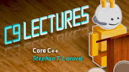Stephan T. Lavavej, aka STL, is back on C9! This time, STL will take us on a journey of discovery within the exciting world of Core C++ (standard C++, the core language). We know lots …
Stephan T. Lavavej: Core C++, 1 of n [2012/05/16]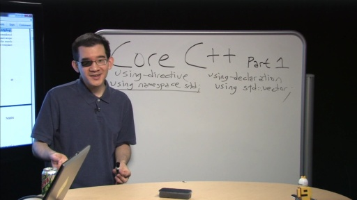In part 1, STL focuses on Name Lookup, which is a surprisingly complex process. Remember Herb Sutter's great GotW post (#30, to be precise) on Name Lookup? Here's the problem from that post, to refres…
Stephan T. Lavavej: Core C++, 2 of n [2012/07/10]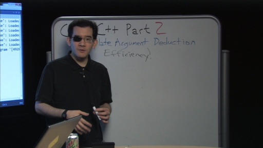In part 2, STL will teach us all about Template Argument Deduction. Template arguments are deduced when a call is made to a template function, but some or all template arguments are omitted. The compi…
Stephan T. Lavavej: Core C++, 3 of n [2012/07/24]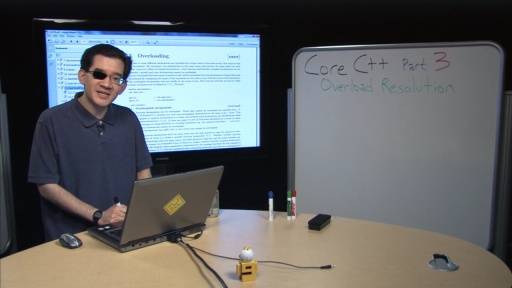In Part 3, STL digs into Overload Resolution. A function template can overload non-template functions of the same name. In this scenario, function calls are resolved by first using template argument d…
Stephan T. Lavavej - Core C++, 4 of n [2012/08/22]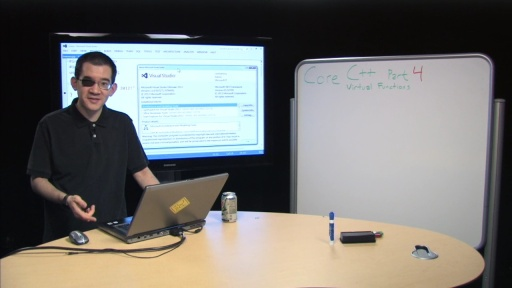n part 4, Stephan teaches us about Virtual Functions. In parts 1-3, we learned about compile-time constructs. Now, we enter the realm of runtime. STL spends some time discussing inheritance and a bit…
Stephan T. Lavavej - Core C++, 5 of n [2012/10/25]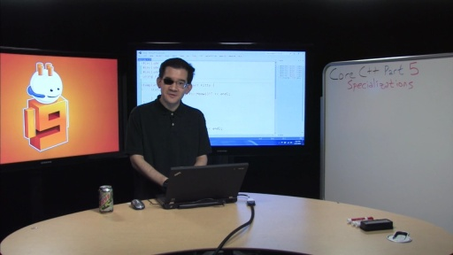In Part 5, Stephan teaches us about Explicit and Partial Specialization of class and function templates. From MSDN -> Class templates can be specialized for specific types or values of the template…
Stephan T. Lavavej - Core C++, 6 of n [2012/11/03]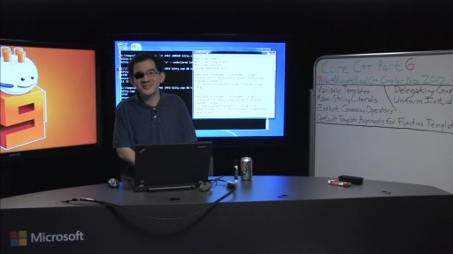Part 6 is a special episode in which Stephan takes a look at the latest C++11 features that were just added to the Visual C++ compiler:Variadic templates Raw string literalsExplicit co…
Stephan T. Lavavej - Core C++, 7 of n [2012/12/26]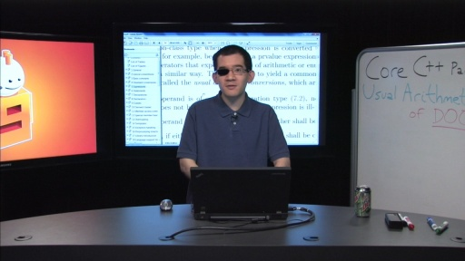In Part 7, STL teaches us about Usual Arithmetic Conversions, Template Metaprogramming, and shares some of the STL internal implementation ( some of it not yet released ). Many of you have asked for …
Stephan T. Lavavej - Core C++, 8 of n [2013/02/06]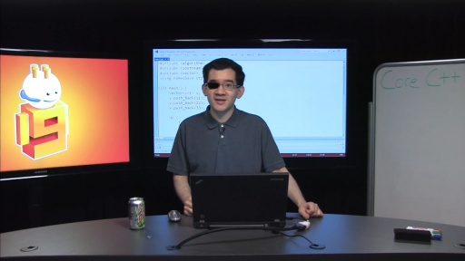In part 8, STL digs into the do-while loop, casts, one definition rule (ODR), and his variadic template array sorter. There is a lot of information in this episode, so get comfortable, tune in, and le…
Stephan T. Lavavej - Core C++, 9 of n [2013/06/11]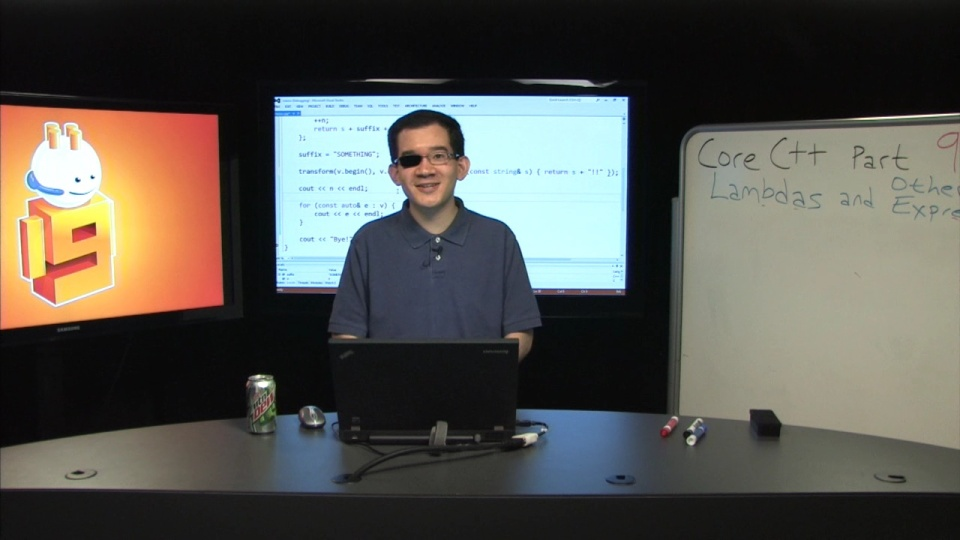In part 9, STL digs into lambdas and other expressions. Lambdas are very useful and you've know doubt been enjoying them in your modern C++ programming. As you can imagine, STL will go deep an…
Stephan T. Lavavej - Core C++, 10 of n (Nov 2013 CTP) [2013/11/19]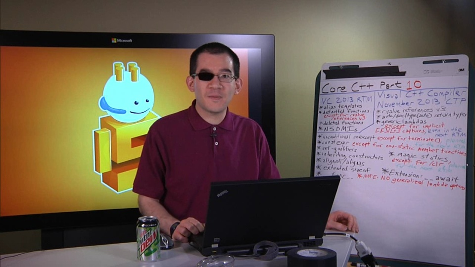In part 10, STL explores the new features in the Visual C++ Compiler November 2013 CTP (Community Technology Preview), in addition to the features that were added between VC 2013 Preview and R…